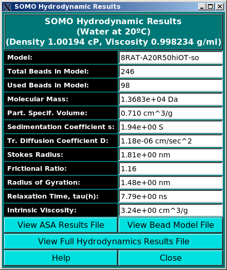

| |
Manual |

The Show Hydrodynamic Calculations pop-up window reports the most commonly used subset of the hydrodynamic parameters computed by US-SOMO, shown in the picture above. If the Zeno method has been used to calculate them, some fields will not be populated. The full list is automatically saved in a file under the extension *.hydro_res. The solvent type and conditions used are also shown in the upper frame.
This document is part of the UltraScan Software Documentation
distribution.
Copyright © notice.
The latest version of this document can always be found at:
Last modified on April 15, 2015.